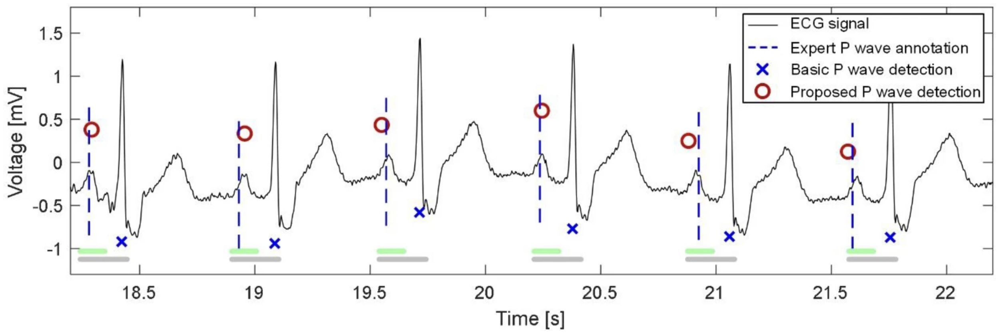
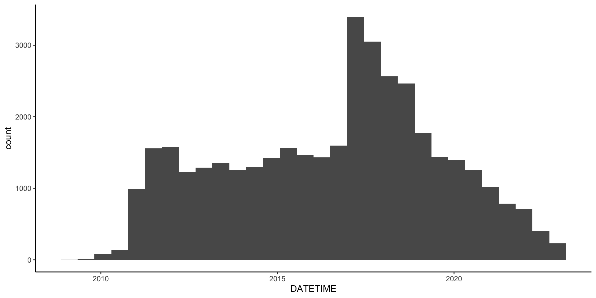

| Task | Deadline | |
|---|---|---|
| Arrhythmia (21%) | ||
| Atrial Flutter and Family History | JAHA manuscript pending revisions | 2023-11-03 |
| Atrial Flutter and Family History | JAHA manuscript pending co-author feedback | 2023-11-23 |
| K23 | Update AF proposal | 2023-11-01 |
| Phenotype AF | Data augmentation and testing/training on WES-confirmed TTN variants | 2023-12-01 |
| Computational (6.7%) | ||
| Cardiovascular Biorepository | Convert to PARQUET format to prepare for analysis | 2023-11-21 |
| Cardiovascular Biorepository | Pipeline for data/cohort extraction from CCTS | 2023-11-25 |
| Causal Modeling | Sequential and parallel modeling with interaction terms | 2023-12-01 |
| Harmonic Regressions | Implementation of cosinor, population-based cosinor, and multicomponent cosinor metrics | 2023-12-01 |
| Phenotype AF | Generation of clinical features of patients with paroxysmal AF | 2023-11-23 |
| Rhythm Analysis | Machine learning approach to intracardiac signals | 2023-12-01 |
| Clinical (5.9%) | ||
| Clinic | JBVA FIT Clinic | 2024-06-30 |
| Academics (31%) | ||
| Electrophysiology | Fellowship Match | 2023-11-29 |
| Epidemiology (23%) | ||
| HRV and CV Mortality | Manuscript submission to European Heart Journal. Textual revisions pending | 2023-11-20 |
Research-In-Progress
Anish Sanjay Shah, MD/MS
Cardiology Fellow
University of Illinois at Chicago
Cardiology Fellow
University of Illinois at Chicago
November 20, 2023
AFL/FH updates
- Feedback? Should we request for an extension?
- Circulate amongst co-authors
Why do we believe that Black v. Non-Black individuals had higher rates of AFL despite balanced risk factors?
AF Registry and CCTS Data
- Have all EMR data from 2010 to 2023 now, which increased file sizes by 30% (now over 70 Gb), and increased
n = 140kton = 210k - Have all ECG for same patient population (approximately 40 Gb in XML format)
- Created
parquetformat to utilize Apache Arrow for I/O
- Development of filtering pipeline for MRNs, diagnoses, medications, procedures, etc.
AFEQT/SDOH
Which key variables should be included for evaluation? Some of these have been studied, but not in context of AFEQT/symptom burden
- ECG factors at baseline compared to at time of repeat evaluation (heart rate, rhythm)
- Maintenance of sinus rhythm (percent burden of AF, frequency of ECG in sinus rhythm)
- Medication changes or intensification (addition of anti-arrhythmic)
- Referral to cardioversion or ablation
- Administration of anticoagulation therapy
ECG/TTN
Timeline for abstract submission to HRS (12/15):
- Complete initial model training on pathogenic TTN cases
- Exclude other TTN variants from analysis to have cleaner controls
- Identify appropriate metrics (e.g. AUC, net classification, etc)
- Identify if segments of ECG are more highly weighted (variance importance)
November 13, 2023
Updates
- AFL/FH paper revisions before resubmission (deadline 12/05), would like feedback in next 3-4 days, then circulate to co-authors
- Clean CCTS/AF Registry data over next 2 weeks, with anticipation of AFEQT being complete in that time-frame
- Submit rank list for EP fellowship on Wednesday 11/15
- Meetings with Emilia Benjamin and Seung H. Choi in next 2-3 weeks to discuss AF phenotyping project
- PRS calculations with SNPs from NW
October 26, 2023
AFL/FH Simple Revisions
- Conform with AHA guidelines on reporting health differences by races
- Including Clinical Perspective section
- More detailed methods on patient selection and recruitment
- Directionality when discussing associations (e.g. weight versus increased weight)
- Add definitions for social drinking
- Clarify anti-hypertensive agents and selection
- Clarify results and statistical methods to match discussion
- Requesting how and why we defined EOAFL as age < 65
AFL/FH Complex Revisions
- Concern is the definition of family history to include AF, HF, and CVA, as is inconsistent with the idea of EOAFL as a separate entity. Unsure how to respond
- Can occult AF be analyzed as a comparative group? Unsure about an additional dataset. However would strengthen the paper if we had a matched cohort as sensitivity analysis.
- In those without stated FH, the FDR were not contacted - reviewers are concerned that frequently patients are unaware of FH, and recommended contacting every study participant. Two paths: 1) Ignore this and state we had a rigorous approach to FH questionnaires; 2) Pursue the ~300 patients with EOAFL and contact FDR to limit confounding.
- Provide a hypothesis and reasoning for the choice of variables. Particularly that of race. Would refer to genetics and poor representation in other studies.
- Concern for why we emphasized difference between Black race and White/Latinx race. Would compare Black to non-Black instead
- Hypothesis on inverse relationsihp between HTN/BB/CCB and EOAFL risk
October 23, 2023
Updates
AFEQT/SDOH: Current focus is on obtaining updated AFEQT, led by JS, with goal to complete AFEQT in next several weeks. In parallel, using EMR-based records to evaluate clinical outcomes. It will take roughly 30 hours of statistical work to incorporate the clinical and AFEQT data (roughly 1-2 weeks), once the AFEQTs are done.
AFL/FH: Our good news was that JAHA is willing to review our paper again with revisions. A majority of these will likely be completed within the next 4-5 days (deadline = 10/31) but have to decide on if new/additional FH data collection is needed. The most challenging critique was the potential bias in FH reporting during initial screening. To overcome this, the most thorough option would be to obtain FH data from every patient to avoid systemic errors/bias. However, a limited approach of verifying FH in just the EOAFL may be reasonable. Would like everyone’s thoughts here.
Phenotype AF: Two students have joined this effort, SS and SD, who will be working on initially on the DSP and ML aspects. Current priority is to finish training the models using the TTN data. Unfortunately, this has been delayed with Boards and interviews, but hope to speed this back up in the next 1-2 weeks.
AF/PRS: For our evaluation of the PRS in AF in ethnic cohorts, we are meeting with the eMERGE group (NW). We will need to understand if the PRS can be validated in our UIC cohort, and if there is an existing mechanism to integrate a GIRA with our own EHR.
September 18, 2023
EMR Data
This has been somewhat streamlined to extract data from the CCTS data pull, with full cohort results returned from CCTS.
- Need to extract AF registry patients and add SDOH, medication intensification, and procedure reports.
- Working with Tofovic/Nischal to extract echocardiogram data
- Extracted roughly 8k ECG, digitized, and segmented to individual beats, which provides roughly 40k samples for testing amongst the ~300 WES patients
- Working with Chen to complete power calculations based on our population and current literature
AFEQT/SDOH
- Spoke with Jerry/Muriel about re-organizing the AFEQT data for manuscript
- Will need to complete roughly
n=600follow-up AFEQT - Power calculation suggest would need
n=200Hispanic/Latinx - Timeline TBD (expect ~ 4-6 weeks)
- Subsequently will need to extract patient outcomes (intensification, burden) from CCTS pull
- Adding Angela Hussain to data collection as student researcher
- Check in with Annette to help with Spanish-speaking requirements
AF/Genetics
Met with AFGen group (Patrick Elinor, Emilia Benjamin), encouraged computational approach in genetics. Currently working to filter and annotate our WES dataset, but expanding to novel gene regions (e.g. neurocardiac receptors) that are not included in general cardiomyopathy/arrhythmia panels.
- Variant evaluation/assessment of different reference genomes
- Variant filtering based on SIFT/PolyPhen
- Annotation based on multiple sources (USCS, NCBI, etc)
- Inclusion of broader, related genes (e.g. ADRB2 not included in recent evaluation)
September 11, 2023
AFEQT
Current manuscript has n=453 individuals split amongst races, with some strength of assocation b/w SES/SDOH and ∆AFEQT.
- Have
n=760baseline AFEQT data points, but need roughlyn=600additional follow-up AFEQT scores - Have
n=1506currently in AF Registry, thus743more patients that can be added - Would allow us to be powered for mediation analysis, and stratified analyses
- Able to incorporate intensification and recurrence rates now, as well as census tract (vs. zip) and language barriers now
Next:
- Complete the additional
600AFEQT follow-ups - Extract data from CCTS to “flush out” registry data
- More specific/appropriate analyses for SDOH including mediation
PRS for AF/eMERGE
- We are meeting with NW and the eMERGE group to validate PRS in AA/HL population here at UIC this week.
- Met with Hua Yua Chen to go over PRS power calculations
- Generating multiple sample size/power calculations based on C-statistics seen in other AF/PRS papers → however may not apply equivalently in AA/HL population as primarily derived from Caucasian populations
September 8, 2023
AF/Genetics
Completed computational genetics coursework on variant analysis. Although some work has already been done on this, going through the basics will allow us to have in-house variant annotation pipeline
- Uploaded our ~2G of patients to cluster
- Generated functions to split VCF by individual case
- Identified variant locations
Next: Evaluate variants using PolyPhen and SIFT databases
ECG/pAF
Recently was asked to review/adjudicate ECG for the PhysioNet challenge on AF prediction algorithms. In line with my interest at phenotying AF based on ECG markers.
- Segmentation of individual beats has been automated
- Augmenting the data to individual beats (similar to van de Leur et al. (2021))
Next: Training on labeled AF patients with TTN variants
Figure 1: Annotation of individual beats
AF/SDOH
- eMERGE network meeting this week
- Processing UIC/CCTS data
- Uploaded January to June ECG data from MUSE
- Will still need updates from CCTS for 2023 remaining clinical data
- Have to solidify definitions for therapy intensification and AF outcomes
August 21, 2023
Phenotyping AF
Identifying phenotypes of AF that are at risk of progression (e.g. developing higher burden, persistent AF, TICM, etc)
- Extracted clinical covariates for ~6k patients, stratified by time/onset (this is ~7 million diagnoses)
- Extracted medications by time/duration of prescription
- Filtered down to all cardiovascular medications
- Classified medications that are relevant to AF (AC/AP, AAD)
- 2.5 million prescriptions were analyzed
- Evaluated ECG related to this population and initiated segmentation/feature extraction
- Goals: Pull procedure reports to assess burden, and process text-based echocardiography data
ECG and Genetic Variants
- Completed the software needed to annotate ECGs on single leads
- Will have to evaluate efficacy amongst 12-lead systems (e.g. 5000 x 12 array)
- Using semantic segmentation approach to classify waveforms
- Have started cluster-based pipeline development for re-calling VCF to identify variants based on…
- Multiple different population panels (different allele frequencies)
- Filter on read depth and quality
- Will need to learn about other filtering approaches
SDOH/AF/HSR
- Current knowledge gap is interaction between race/ethnicity and socioeconomic status in management of AF (Essien et al. 2021)
- Similar to AF Registry + Cluster, can use the definition of treatment intensification as part of health care differences
- Parent project to AF/language
- Unlike other cohorts (e.g. ARIC had
n=3200but onlyn=500were Black), have more diverse population pool
August 14, 2023
AFL/FH
Completed revisions to paper with tentative plans for re-submission.
- Called
n=31families to confirm AFL/AF diagnoses and clarify CHF and CVA histories - Re-analyzed pedigrees with multiple definitions of +FH in FDRs as a sensitivity analysis
- Major findings remain same (and robust to adjustment):
- +FH doubles risk for “premature” or earlier onset of AFL
- EOAFL as corrolary increases likelihood of AF and AFL in FDRs
- Black race a/w EOAFL, partially mediated through OSA/ETOH (most prominent in this subgroup)
- Resubmission to… JAHA, AHJ, IJC, BMJ Heart
AF/SDOH
n=4537patients (still missing updated CCTS pull of about 2k)- 92% have NDI via census tract
- 52% have social histories completed
- 81% are English speaking, 10% Spanish
- Medications/Labs/Vitals/Visits/Comorbidities being evaluated currently
AF Phenotyping
Figure 2: P wave detection
Working on ECG beat segmentation and annotation using machine learning approach across multiple leads. Will be applicable across ECG-based projects. Necessary step prior to creating median beats.
July 31, 2023
AFL/FH Reviewer Concerns
- How many FDR were directly contacted?
- What constitutes an “atrial arrhythmia” in family members? Often asymptomatic. Needs clear definition
- Why LOAFL versus EOAFL, instead of EOAFL versus controls?
- Why is FH/Race significant only in a single racial group?
- Overstatement of importance of FH over 4q25 papers in isolated AFL
- How are CVA events labeled as cardioembolic?
- Why include CHF as part of arrhythmia risk factors in FDR?
- Define excess ETOH usage
- Pedigree needs to be labeled more specifically/informatively
July 24, 2023
Active projects
- AFL/FH: Revisions to be addressed in next draft. Will identify additional journals to target.
- HRV/CVD: EHJ
- ECG/PAF: Active project involving computational approach at identifying sub-phenotypes of paroxysmal AF based on ECG-driven parameters with subsequent work on clinical patterns and trajectory
Phenotyping AF
Project is a “big data” project using over clinical data from 2010 to 2023, supplementing the AF Registry with data mining and machine learning approaches.
Composed of three elements:
- ECG data in form 12-leads of 10 second signals, sampled at 500 Hz from 2010 to now
- Clinical structured documentation including vitals, medications, labs, echo/study reports from 2010 to now
- Clinical unstructured data from MD documentation
Data overview
ECG data:
- 500k ECGs collected from 2010 to 2013
- 70 Gb of raw XML data (converts to ~50 Gb of WFDB)
Raw clinical data:
- 43 Gb raw data (70% is from clinical notes alone)
- 145k unique patients with CVD diagnoses (cardiomyopathy, arrhythmia, vascular dz, etc)
AF-specific data
ECG data:
- 33k ECG with a diagnosis of an atrial arrhythmia
- 6k unique patients with a diagnosis of AF confirmed by ECG
- Of those 6k patients, 95k ECG taken in total (both sinus + AF)
Clinical data:
- Of the 6k patients c- AF on ECG, 3.9k have clinical data available from CCTS
- Aggregate file size for this 3.9k is < 1 Gb in total
- 600k ICD diagnoses, 4.5 million lab results, 500k visits, 1.5 million vital sign measurements, 2.9 million medications
Project status
Currently have working pipeline for extracting relevant diagnoses, medications, labs, etc, for additional projects. Can email ashah282@uic.edu for questions or project proposals.
Can see current proposal here
June 12, 2023
Backbone for aims
- Sympathetically-mediated AF occurs predominantly earlier in paroxysmal AF, in hearts with minimal scar burden.
- To cause episodes of AF would require abnormalities in conduction from both intracardiac and extracardiac causes
- Abnormalities from both intracardiac and extracardiac causes are either acquired or genetic
- These factors may also lead to different rates of progression of AF
Question: Do certain genetic variants contribute to the progression of paroxysmal AF to persistent AF?
Trajectory of pAF
- Kerr et al. (2005) from a Canadian Registry followed
n = 757for ~8 years, 5 year recurrence was >60%- Positive predictors = age, +AS, +MR, LAE, reduced LVEF
- Negative predictor = rapid heart rate during AF
- Post catheter ablation, 5 years recurrence was 60% (1st ablation), and 20% after (>2 ablations) (Takigawa et al. (2014))
- Predictors = LAVI and patient age
- Holmqvist et al. (2015) noted progression based on age + increased heart rate in sinus (CHA2DS2VASc had minimal discriminatory power)
- Andrade et al. (2023) evaluated 3 year follow in ablation versus AAD, found
HR = 0.51 - Acutely, post-cardiac surgery AF can be predicted by decreased HRV (Veselá et al. (2023))
Predictors of pAF progression
CUrrently progression is poorly defined…
- Clinical: need for rhythm control intervention (ECV, PVI), hospitalization for symptoms or heart failure, % burden increase by an inflection point
- ECG: Decrease HF-HRV, increased P wave duration/dispersion, decreased P wave amplitude (during AF, decreased F-wave amplitude)
Persistent = n continous ECG in AF, diagnosis by cardiology, >7 day duration of episodes (or less)
Approach for evaluation
- Establish clinical progression of disease with multiple versions of the definition
- Obtain ECG data (segmentation to evaluate sinus beats)
- Assess genetic variants ↔︎ ECG characteristics to compare with outcomes
Figure 3: Manhattan plot Verweij et al. (2020)
Figure 4: Cluster of genetic variants by ECG component Verweij et al. (2020)
Figure 5: Individual variants with ECG components Verweij et al. (2020)
Next steps
- Obtain ECG data (currently have from 2010 to 2017)
- Segmentation approach for sinus beats
- F-wave identification for AF beats
- Contact Broad Institute about SNP-array data from previous GWAS
- NLP approach to assessing paroxysmal versus persistent
June 5, 2023
Aims Progress
Goal: Identify characteristics that define sympathetically-mediated paroxysmal AF (as compared to scar-mediated pAF) in trajectory of paroxysmal → persistent
- Pending mentorship meeting (dates requested for Alvaro, Amit, Dawood)
- Met with Lampert - be much more specific in ANS factors in pAF
- Evaluate ECG during AF: coarse AF v. fine AF → triggering event (ADHF, surgery, etc…)
- Evaluate ECG during sinus: P wave morphology/area/dispersion and AF burden
- Evaluate candidate genes (ANS neurohormonal pathways) in Emory Cohort (which has high vagolysis burden) as initial study; validate these genes in AF registry with burden/rate of AF progression
AF Phenotyping
- Pending CCTS to upload data (hundreds of GB in size)
- Complete setting up cluster computational pipeline for NLP of unstructured text
- Specific goal is to identify timepoints: onset of AF, transition to persistent AF
- Initiate analysis of ECG data
- Convert to annotation format (WFDB)
- Identify median P waves per ECG
May 22, 2023
ECG analysis
K23 AIM #1 is to identify paroxysmal AF into low-scar burden (and high vagolytic triggers) in AF registry.
- Have imported superset of ECGs from MUSE (~500k ECGs) in XML/binary format (including raw signal, diagnoses, timing, etc), approximately ~1 TB
- Convert XML format into digital signal… software developed (same as for HRX abstract), approximately ~250 GB
- Analysis of ECG markers: high frequency HRV, P wave dispersion, P wave terminal forces, and GEH (Wilson’s vector gradient), and if possible to identify “coarseness” of AF
- Split data into PRE/POST AF diagnosis, and identify control group from other ECGs in superset
May 12, 2023
Updates
- ECG data is being pulled from MUSE in XML format
- CCTS data pull to be completed today
- EGM signal processing - work in progress with goal of automated beat generation of multi-channel leads (R/C++ package)
- Need storage space for ECG data (raw and processed), cluster allows only 50Gb for read/write storage (batch processing): >100k ECG
- CCTS data will need raw storage space: 10 years of patient charts + notes
May 8, 2023
Goals
- Phenotyping of AF, as current grouping is inadequate. Focus on risk category changing from paroxysmal to persistent (baseline concept of multi-wavelet reentry)
- ECG- and EGM-based analysis of AF as additive components
- CARTO/Rhythmia/EnSite cardiac mapping software to determine LA scar burden
- NLP coursework, cluster set-up preparation
- HRX abstract preparation on EGM and Physionet/WFDB
- Identify next paper to start preparing
- eMERGE/AF IRB waiting on approval from eMERGE
- EPS study IRB in progress
HRx abstract

Figure 6: Automated EGM annotation of single lead, with high-fidelity signal resolution. 75% file size reduction and 500% read/write speed-up.
April 17, 2023
Goals
- Phenotyping of AF, as current grouping is inadequate. Focus on risk category changing from paroxysmal to persistent
- ECG- and EGM-based analysis of AF as additive components
- CARTO/Rhythmia/EnSite cardiac mapping software to determine LA scar burden
- AFL/FH manuscript submission
- HRV/CVD manuscript revisions
- Identify next paper to start preparing
- eMERGE/AF IRB
- EPS study IRB
- NLP coursework, cluster set-up preparation
- HRX abstract preparation on EGM and Physionet/WFDB
April 10, 2023
AF Ontology
Generation of key features that are related to arrhythmias:
- Clinical history and trajectory
- Echocardiographic findings
- ECG-based features
- Family and social history
- Potential genetic markers

Figure 7: Example from HF evaluation and progression

Figure 8: Utilizing patient features to create a matrix-based cluster

Figure 9: Support-vector based clustering, multidimensional K-clustering in feature-space
Phenotype-based WES cohort
| Age | Comorbidities | Proportion |
|---|---|---|
| - | none | 10-15% |
| ≤ 55 | * | 20% |
| ≤ 65 | ≤ 1 | 20% |
| ≤ 65 | ≤ 2 | 10% |
| ≤ 65 | ≤ 3 | 10% |
| ≥ 65 | ≤ 1 | 10-15% |
Alternatively can aim for two major groups within paroxysmal cohort definition:
- ≤ 65y + structural heart disease (70%)
- ≤ 65y - structural heart disease (30%)
Aim for 20-30% to have had PVI to be able to integrate intracardiac findings.

Autonomic inflexibility and CV mortality in HF and LF bands

Improved model concordance with addition of autonomic inflexiblity
March 31, 2023
AF Phenotyping
NLP combined with DSP can help in identifying sub-phenotypes of AF…
- Polygenic risk score assessment based on phenotypes and sub-phenotypes
- Current phenotype approaches limited to structured text
- Unstructured data can be extracted from clinical notes using NLP tools: BERT, Sci/RoBERTa, meta mapper, etc
AWS HPC + CCTS data + AF registry + EP lab + biomarkers

Figure 10: Complexity of phenotyping is based on how structured or unstructured the data may be

Figure 11: Identifying a true phenotype is complex and most often incorrect unless corroborated through other mechanisms

Figure 12: Phenotypke KB current standard for diagnoses of AF
EPS signal processing
Utilize combination of surface ECG and intracardiac EGM to…
- Identify intracardiac features, e.g. multichannel morphologies
- Evaluate atrial abnormalities, such as conduction left → right activation
- Feed features into LSTM or convolutional neural network to understand different AF phenotypes

Figure 13: Annotated ECG to identify P wave, QRS, and T wave fiducial points
- Summation of P wave force vectors across surface ECG (signal-averaged)
- Identify terminal P wave force abnormalities
- Evaluate changes in P wave morphology over time
March 20, 2023
Updates
- AFL/FH:
- manuscript was sent for initial revisions (03/03/23)
- feedback received on 03/17/23 from Jordan
- second draft to be returned on 3/20/23
- Aim 1: “Big data” approach using claims-based data, IRB/CCTS approval obtained
- NLP/ML area of focus will be initially on AF (only performed x 1)
- Approach for recurrent events, Weibull distribution expected
- HRV/CVD :
- priority for this week
- HF/LF HRV values showing >10 fold HR for bottom versus top quartile (with almost >95% sensitivity)
- Genetic analysis:
- ACER will start AWS workspace this week
Help Wanted
- Ablation database: working with Wissner to revise ablation database
- manual data reconciliation
- OCR/OMR-based PDF conversion approach
- ablation outcomes x genetics
- AF phenotyping: key part of Aim 1
- Computational Biorepository for Cardiovascular Disease: CCTS data pull active, all clinical notes, data points, etc since 2010 on CVD
- AF ontology needed using a NLP/LLM (e.g. BERT)
- NLP/ML for EHR data:
- CBCD: overlap of DCM/AF registries, CCTS data pull of all clinical notes since 2010 on CVD
- Key part of Aim 1 is to identify AF phenotypes in those with paroxysmal AF
- AF Ontology: working with Andrew Boyd on AF-NLP framework (SciB)
February 27, 2023
Updates
- AFL/FH: will need age of diagnosis of event of family history prior to final analyses
- CAR: analysis pending by Konda, however unclear if we can strongly accept null-hypothesis
Non-linearity in ANS dysfunction
- Proportional hazard assumptions
- Defined using time-variance, time-interaction, Martingale residuals
- Satisfied PH assumptions
- Non-linearity of HRV and CV mortality
- Spline analysis with up to 5 knots
- Parametric threshold analysis (survival modeling)
- Non-parametric (binary outcome) threshold analysis
- Identified non-linearity of response
- Re-analyzed data using cut-point (as shown in Figure 14)
- Almost 100% accuracy in classifier of low-risk cohort
- Almost 10-fold hazard in identify high-risk cohort

Figure 14: Increase of ~10 fold in CV mortality in 1/4 patients identified by abnormal resting and reactive vagal tone. Robust classifier of resilience.
Genetic analysis
- WES-generated VCF files on n=28 patients from EO-AFL + FH subgroup
- Due to size limitations (no access to HPC) converted VCF data …
- VCF to Apache Arrow
- Arrow conversion to
featherand toparquetfor header, annotation, and columnar genotype data - Analyze as in-memory array
- Re-vert to ASCII-based format for GZip formated VCF
- Filtering of data
- Limited to coding regions
- Filtered for read depth > 20
- Compared to dbSNP builds using
SIFTandPolyPhen - Pending further annotations based on arrhythmia-panels
Specific aims
Have revised aims, and have drafted the x1 page specific aims to be shared with mentors.
Mentors: D Darbar, AJ Shah, A Alonso, M McCauley, A Boyd
February 20, 2023
AFL/FH
- Genetic basis for FH may be more promising than association with FH broadly, but would require additional WES to be sent
- Would need to repeat VCF analysis for an arrhythmia panel (instead of cardiomyopathy panel)
CBCD
Computational biorepository for cardiovascular disease
- Will need a large computational biorepository
- Claims data from both CPT/ICD codes
- Clinical documentation (raw text from clinical notes)
- Medication history
- Study data e.g. XML of ECG, echo reports, coronary angiograms, device interrogations, etc
- CCTS to pull data, DRA to be submitted today
February 6, 2023
Updates
- AFL/FH: WES needed prior to completing revisions
- ARIC: potential option to pursue genetic profiling in ARIC per Alvaro, need formal proposal
- K23: drafting specific aims in 1-pager format
- VCF: data able to be analyzed/cleaned, however requires more CPU to perform

Figure 15: Chromosome 1 summary
January 9, 2023
Updates
AFL/FH:
- Pedigrees/genetics completed (thanks to Ana, Shashank, Mike)
- Outline/draft to be re-written
- HRV/CV Mortality paper rejected, need to re-think strategy with senior authors
- K23 aims to include 1) EP lab as translational component, 2) arrhythmia risk prediction as computational component
AFL/genetics
- ~87 individuals with +FH
- ~81 individuals with WES
- ~18 individuals with VUS in total
- 1 individual with VUS + FH
Multiple Pedigrees
 ## TTN Mutant
## TTN Mutant
 # December 19, 2022
# December 19, 2022
Updates
AFL/FH:
- Pedigrees TBD
- Draft completed, pending feedback
- Supplemental tables needed?
AF/Recurrence:
- Scott added additional patients from UIC (September 2020 to now)
- Data collection pending
K23 Aims
Objective: Clinical EP researcher using computational neurocardiology techniques to study arrhythmia mechanisms
- Evaluating vagolysis and its effect on triggered arrhythmia mechanisms, both ventricular (e.g. SCD) and atrial (triggered AF)
- Using computational approach to phenotype triggered onset arrhythmias, e.g. atrial fibrillation
Mentorship Team: Amit J. Shah, Dawood Darbar, Rachel Lampert, Viola Vaccarino, Mark McCauley, Andrew Boyd, Alvaro Alonso
K23 Approach
Vagal tone and triggered arrhythmias
- Manuscript on stress-induced vagolysis and CV mortality under review
- ANS dysfunction during/with ischemia work-in-progress
- [Create murine/translational model for vagolysis and triggered arrhythmias]{.arrhythmia[2]}
Arrhythmia phenotyping
- AFL/FH manuscript work-in-progress
- AF/race project work-in-progress
- [Classification of arrhythmia phenotypes using large data set (MVP/VA research data, UIC, ARIC)]{.computational[3]}
Murine Model of Vagolysis
- Atria are heavily innervated by ANS ganglia
- Sympathovagal balance locally mediated through adrenergic lysis of cholinergic activity
- Neuropeptide Y (NPY) causes cholinergic inhibition through Y2R
- Pro-arrhythmic murine model (compared to healthy controls)
- Ex-vivo vagal-sparing Langendorf preparation
- Catecholamine infusion and NPY Y2R antagonists to modulate arrhythmic state
- Measure atrial conductive properties as outcome
- Baseline, with catecholamine infusion, VNS stimulation, and Y2R antagonism
December 12, 2022
AF Catheter Ablation and Recurrence
Data/power increase:
- Inclusion of VA data
- Additional data pull from EPIC by Scott Uphouse (pending)
- Inclusion of UIC billing code data?
Atrial Flutter and Family History
Pedigrees:
- How should these be incorporated into the manuscript?
Genetics:
- 305 patients that have undergone whole exome sequencing, but unclear how to match these to the AFL data
- Should we genotype the rest of the EO-AFL patients?
ECG/EGM analysis
November 21, 2022
Updates
- AHA IPA: Completed draft, pending revisions
- AFL Paper: Draft to be done by Wednesday
- AF Ablation + Biorepository: Pending IRB
- Stress and CVD Mortality: Submitted to Circulation, revisions Pending
November 14, 2022
Early Onset Atrial Flutter
- Draft of paper expanded to include results
- Prominent findings of family history and association with arrhythmia
- Key tables and figures established
Next steps:
- Find agreement in key results and figures
- Identify main finding
- Complete discussion section
October 10, 2022
AF Registry
Status:
- Current overview
- Not yet powered
- Will need to revise out approach
October 2, 2022
AF Registry
- Current number: 219
- Recurrence rate: 46%
- Death = 12
- MACE = 70 (including repeats)

GIS-based MAP of right atrium for mapping and localization purposes for publications.
September 26, 2022
AF Registry
Analysis
- Genetic analysis in PLINK complete
- Models are set up for analysis once data intake is done
Status
- Have n = 238 currently
- Reviewed 95 charts thus far (CAR team)
- Of n = 108, 75 have had recurrence, 33 without (rate of about 70% of anyarrhythmia)
- Of ECG based confirmation, 43 AF recurrence events (53%)
September 12, 2022
AF Registry
REDCap data dictionary is finalized. Next steps are:
- Data entry for outcomes
- Finalization of new patients to add from AF ablation registry
Genetics
Currently able to:
- Format large SNP data sets into appropriate tables
- Utilize
PLINKandMERLINto process Chen’s genetics data - Run from R to help analyze findings
Next steps:
- Confirm ancestry (for practice) percent likelihood
- Then, once outcome data is complete, analyze differences by race
Analytical methods:
- Time to binary outcome of recurrence
- Recurrent event analysis for AF recurrence
- Can revise with Bayesian modeling in
STANas well
August 22, 2022
AF Registry
Status
- REDCap is in progress
- Have an additional list of registry patients that may/may not have had ablation
Next Steps
- Complete 100 REDCap patients
- Identify 300 patients that have potentially had ablation
CARTO Maps
- Ablation quantification
- Activation mapping
- EGM annotation
- Voltage mapping
- Conduction velocity
- Earliest/latest activation
- Geometry data
August 15, 2022
UIC-wide data summary
- N ~ XXX had ablation
- Date range from >= 2010
AF registry data
- N=~300 had ablation
- Date range from >= 2010
Next Steps
- Generate list of MRN for data collection
- Use new REDCap to obtain ECG/ablation data
- Run preliminary analysis on first 100 patients
- Consider expansion to JBVA/ACMC data
August 1, 2022
AF Registry
Consider additional variables:
- Recurrent events and adjudication (HF, cardiac admission, MACE)
- Holter/ECG data and repeat collection (P-wave morphology, Wilson’s vector gradient, amplitude of AF waves “coarseness”)
Will check with the MESA and ARIC data base on how repeat events were defined.
Murine EP Studies

Human EP Studies

July 25, 2022
Forest Plots
A simple way to make sub-group analysis Forest plots, working on improving customization.
July 18, 2022
AF Registry
The AF registry is described here. Current issues:
- Data quality - consistency between reviewers
- Missingness - decisions on acceptable thresholds
- Variable selection - echo findings, EP studies, medications, labs, symptoms
- Management - REDCap, shared excel sheet
- Adjudication/review - outcomes, clinical follow-up length
Epidemiology, Arrhythmia, Clinical, Computational
Andrade, Jason G., Marc W. Deyell, Laurent Macle, George A. Wells, Matthew Bennett, Vidal Essebag, Jean Champagne, et al. 2023. “Progression of Atrial Fibrillation After Cryoablation or Drug Therapy.” New England Journal of Medicine 388 (2): 105–16. https://doi.org/10.1056/NEJMoa2212540.
Essien, Utibe R., Jelena Kornej, Amber E. Johnson, Lucy B. Schulson, Emelia J. Benjamin, and Jared W. Magnani. 2021. “Social Determinants of Atrial Fibrillation.” Nature Reviews Cardiology 18 (11, 11): 763–73. https://doi.org/10.1038/s41569-021-00561-0.
Holmqvist, Fredrik, Sunghee Kim, Benjamin A. Steinberg, James A. Reiffel, Kenneth W. Mahaffey, Bernard J. Gersh, Gregg C. Fonarow, et al. 2015. “Heart Rate Is Associated with Progression of Atrial Fibrillation, Independent of Rhythm.” Heart (British Cardiac Society) 101 (11): 894–99. https://doi.org/10.1136/heartjnl-2014-307043.
Kerr, Charles R., Karin H. Humphries, Mario Talajic, George J. Klein, Stuart J. Connolly, Martin Green, John Boone, Robert Sheldon, Paul Dorian, and David Newman. 2005. “Progression to Chronic Atrial Fibrillation After the Initial Diagnosis of Paroxysmal Atrial Fibrillation: Results from the Canadian Registry of Atrial Fibrillation.” American Heart Journal 149 (3): 489–96. https://doi.org/10.1016/j.ahj.2004.09.053.
Leur, Rutger R. van de, Karim Taha, Max N. Bos, Jeroen F. van der Heijden, Deepak Gupta, Maarten J. Cramer, Rutger J. Hassink, et al. 2021. “Discovering and Visualizing Disease-Specific Electrocardiogram Features Using Deep Learning.” Circulation: Arrhythmia and Electrophysiology 14 (2): e009056. https://doi.org/10.1161/CIRCEP.120.009056.
Takigawa, Masateru, Atsushi Takahashi, Taishi Kuwahara, Kenji Okubo, Yoshihide Takahashi, Yuji Watari, Katsumasa Takagi, et al. 2014. “Long-Term Follow-Up After Catheter Ablation of Paroxysmal Atrial Fibrillation.” Circulation: Arrhythmia and Electrophysiology 7 (2): 267–73. https://doi.org/10.1161/CIRCEP.113.000471.
Verweij, Niek, Jan-Walter Benjamins, Michael P. Morley, Yordi J. Van De Vegte, Alexander Teumer, Teresa Trenkwalder, Wibke Reinhard, Thomas P. Cappola, and Pim Van Der Harst. 2020. “The Genetic Makeup of the Electrocardiogram.” Cell Systems 11 (3): 229–238.e5. https://doi.org/10.1016/j.cels.2020.08.005.
Veselá, Jana, Pavel Osmančík, Dalibor Heřman, Sabri Hassouna, Radka Raková, Tomáš Veselý, and Petr Budera. 2023. “Prediction of Post-Operative Atrial Fibrillation in Patients After Cardiac Surgery Using Heart Rate Variability.” BMC Cardiovascular Disorders 23 (1): 290. https://doi.org/10.1186/s12872-023-03309-5.